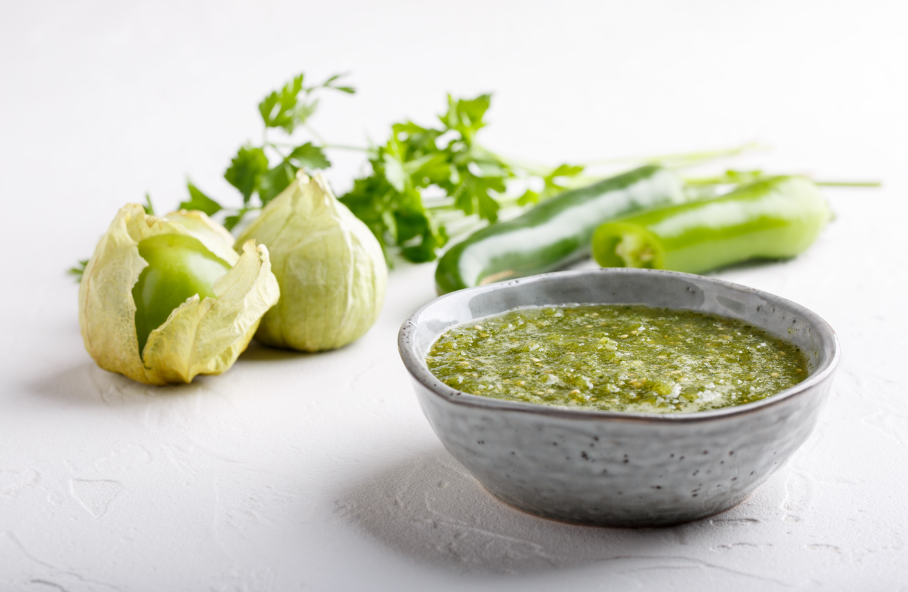

Tomatillo Salsa

Ingredients:
- 6-8 tomatillos
- 3 garlic cloves
- Serrano Pepper or Jalapeno Pepper
- Cilantro (6 to 8 sprigs)
- 1/2 white onion
- Salt
Instructions:
- Spread the tomatillos, unpeeled garlic, and chiles on a rimmed baking sheet.
- Roast the ingredients under a broiler, about 4 inches below the heat source.
- Roast until the tomatillos and chiles are blotchy brown on one side, approximately 6 minutes.
- Flip everything over and roast the other side.
- The garlic should feel soft.
- Allow the roasted ingredients to cool until handleable.
- Peel the garlic cloves and scrape everything, including any juices, into a blender or food processor.
- Pulse the ingredients in the blender or food processor until you achieve the desired consistency (smooth but with some texture).
- Gather the cilantro into a tight bundle and thinly slice across it, including leaves and stems, until you run out of leaves.
- Chop the onion into approximately ¼-inch pieces.
- Rinse the chopped onion in a strainer under cold water to remove the strong flavor.
- Shake off excess water and add the onion to the salsa.
- Add the sliced cilantro to the salsa.
- If the salsa is too thick, stir in water a tablespoon at a time until it reaches the desired consistency.
- Taste the salsa and season with salt, typically around a scant teaspoon.
- Note: Adjusting other ingredients may be difficult due to the roasted nature of the salsa, except for cilantro and onion.